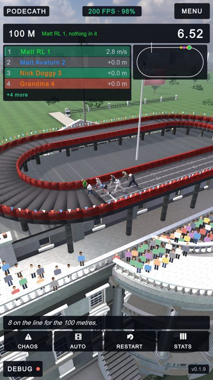
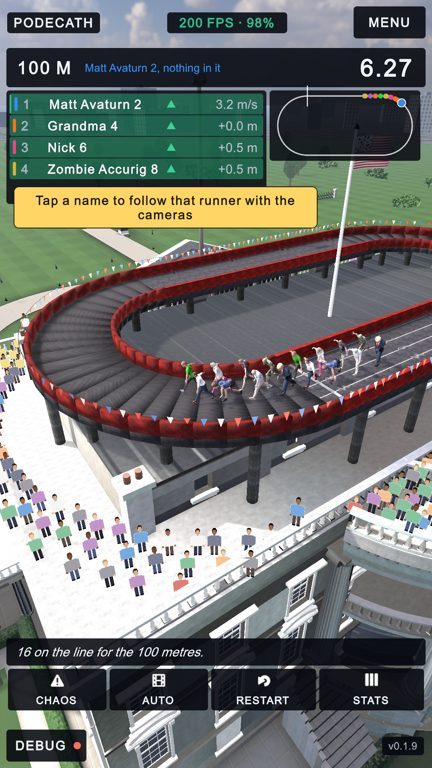
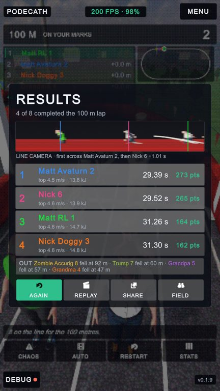
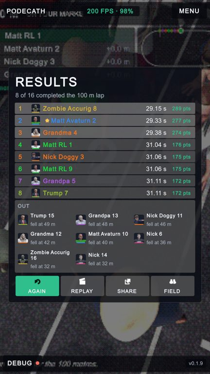
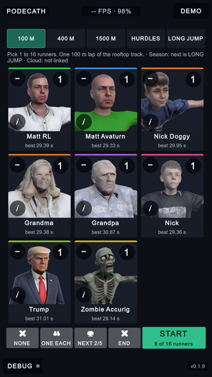
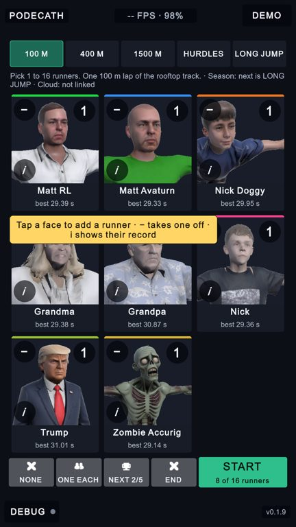

Seven UI ideas, built
PoDecath · 30 Sep 2026 · ideas 2, 3, 4, 6, 8, 9 and 10 from the flow review, as picked by the owner. Numbers are the idea numbers from that list. Dashed red: before. Green: after.
6 · The running order you can read at a glance
- Names were printed in each athlete's colour on a row that flashed green or red when places changed, so a green name could sit on a red row. Names are white now; the athlete's colour is a stripe at the edge.
- A change of place is a drawn arrow, green up or red down, so it reads without telling red from green.
Before

1
After

1
4 · Faces on the results card
- Everybody who did not finish was one paragraph of names and metres. Now each is a face (the portrait the menu already uses) with the name and where they went down, three across.
- Each finisher has their face on their row. A board with more than six finishers and some fallers goes to compact rows, so sixteen still fit on one screen with nothing clipped.
Before

1
After

1
2
10 · The replay behind the results card, without buttons
- The replay looping behind the card recorded the whole screen, so CHAOS, AUTO, RESTART and STATS showed there, dimmed, and could not be pressed. The clip is now the picture between the top bar and the race controls: the race graphics stay, the buttons do not. The shared GIF is the same picture.
Before
1
After
1
9 · One-time hints
- The taps nothing explained get one short bubble each, once per phone: a face adds a runner and “i” shows the record; a name in the running order locks the cameras on; a tap on the card hands them back; the frame rate opens the stats. A tap or six seconds puts it away; never during the demo.
Before

After

1
2 · A loading card between screens
- START, FIELD, MENU, NEXT and every demo hand-off used to freeze the last picture for the seconds a rooftop scene takes to load. The scene now loads in the background behind this card, which names where it is going and fills a bar. Only one load at a time: a second tap is ignored rather than queued.
3 · MENU asks twice, and the phone's Back works · 8 · Kiosk extras
- MENU in a live race now says SURE? first, like RESTART. The phone's Back closes whatever is open (the stats, the CHAOS buttons, a turned-over tile, the replay), then behaves as MENU; on the menu it says BACK AGAIN TO LEAVE.
- In the demo, STOP has to be held for a little over a second; a tap, a touch anywhere or Back only put HOLD STOP TO TAKE OVER in the title. A menu nobody has touched for a minute starts the demo by itself, counting the last ten seconds down on the line under the events (a setting on the menu: 0 turns it off).
No pictures: these are behaviours, checked by the two scripts below rather than by eye.
Checks run in the game
The loop, with the new MENU and Back steps (flow_check.sh) · no console errors
- PASS 1 menu up
- PASS 1b menu corner is DEMO
- PASS 2 race loads, countdown, HUD + overlay up
- PASS 3 first RESTART tap only arms it
- PASS 4 second tap restarts, and counts as an attempt
- PASS 5 finish -> results card, HUD and overlay put away
- PASS 6 nothing restarts behind the card
- PASS 7 AGAIN -> new race, card gone, HUD + overlay back
- PASS 8 second finish shows the card again
- PASS 9 FIELD -> menu
- PASS 10 FIELD keeps the field that just ran (3 runners)
- PASS 11a MENU in a live race asks first
- PASS 11 second MENU tap -> menu at normal speed
- PASS 11b Back on the menu asks for a second press
- PASS 12a Back in a live event asks first, like MENU
- PASS 12 long jump loads
- PASS 13 long jump -> results
- PASS 14 FIELD from long jump -> menu, event kept
The kiosk loop, with hold-to-STOP and the idle start (demo_check.sh) · no console errors
- PASS 1 menu: corner says DEMO, demo off
- PASS 2 DEMO -> 100 m with the whole roster, corner says STOP
- PASS 3 100 m finishes on its results card
- PASS 4 400 m loads by itself
- PASS 5 skipped on to HURDLES
- PASS 6 LONG JUMP loads by itself after the hurdles
- PASS 7 after the last event it wraps round to the 100 m
- PASS 8a a tap on STOP does not end the demo
- PASS 8 held STOP -> menu, demo off, corner DEMO again, whole roster kept
- PASS 9 an untouched menu starts the demo by itself
Every screen at four phone shapes with a notch (notch_shots.sh)
| Screen | Layout check | Notch problems |
|---|---|---|
| setup 1080x1920 | offscreen 0, scroll 0, tiny-text 0, clipped 0, anchor 0 | 0 |
| setup 1080x2340 | offscreen 0, scroll 0, tiny-text 0, clipped 0, anchor 0 | 0 |
| setup 1080x2400 | offscreen 0, scroll 0, tiny-text 0, clipped 0, anchor 0 | 0 |
| setup 1080x2520 | offscreen 0, scroll 0, tiny-text 0, clipped 0, anchor 0 | 0 |
| race 1080x1920 | offscreen 0, scroll 0, tiny-text 0, clipped 0, anchor 0 | 0 |
| race 1080x2340 | offscreen 0, scroll 0, tiny-text 0, clipped 0, anchor 0 | 0 |
| race 1080x2400 | offscreen 0, scroll 0, tiny-text 0, clipped 0, anchor 0 | 0 |
| race 1080x2520 | offscreen 0, scroll 0, tiny-text 0, clipped 0, anchor 0 | 0 |
| results 1080x1920 | offscreen 0, scroll 0, tiny-text 0, clipped 0, anchor 0 | 0 |
| results 1080x2340 | offscreen 0, scroll 0, tiny-text 0, clipped 0, anchor 0 | 0 |
| results 1080x2400 | offscreen 0, scroll 0, tiny-text 0, clipped 0, anchor 0 | 0 |
| results 1080x2520 | offscreen 0, scroll 0, tiny-text 0, clipped 0, anchor 0 | 0 |
Not built
1 · back a runner (a win or lose moment for the viewer), 5 · hide the developer corners in player builds, 7 · pause when the phone is interrupted. Not checked on a real phone yet: the Back gesture, the hold on STOP and the loading card's timing all want one pass on the device.